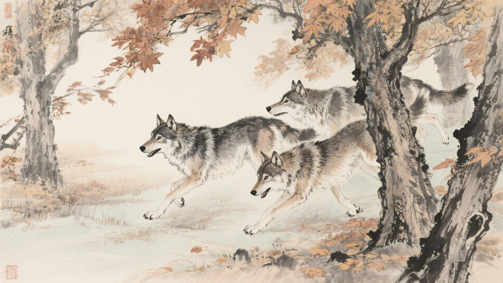
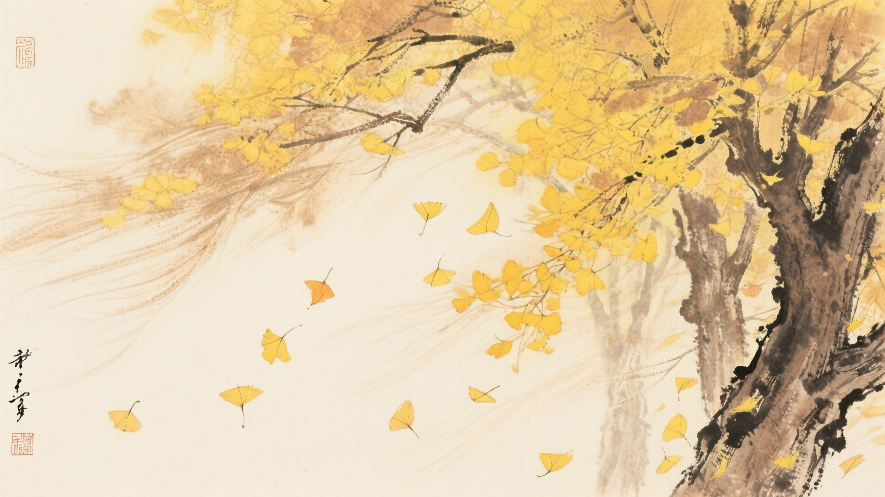
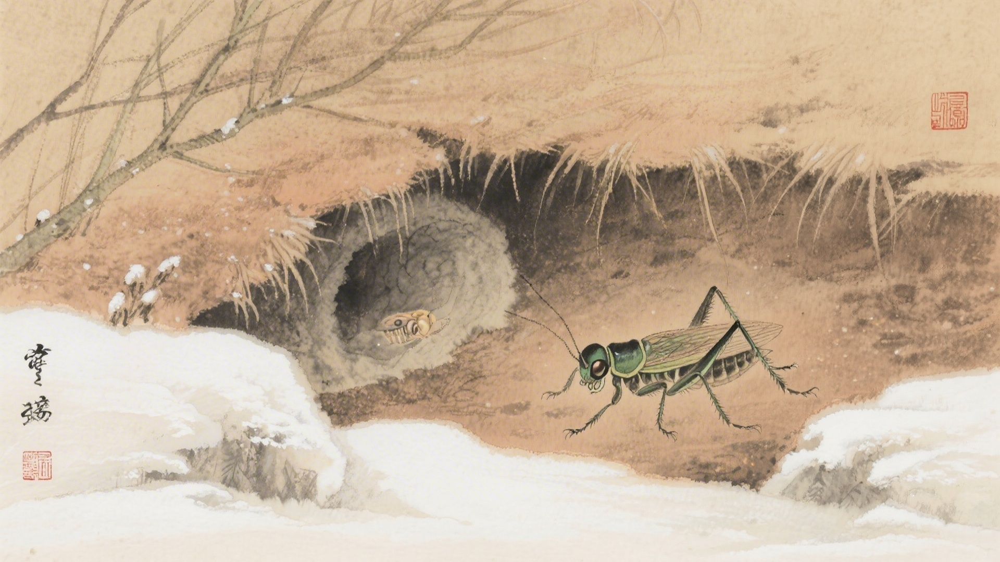
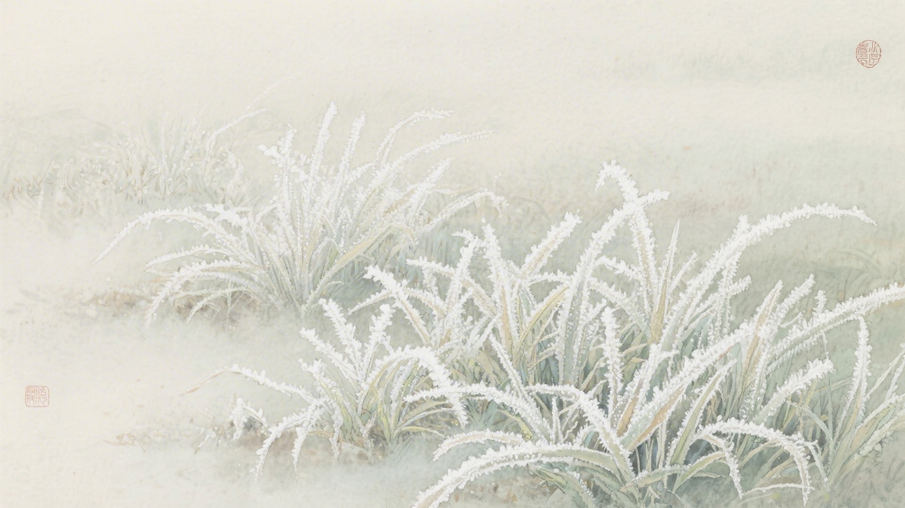
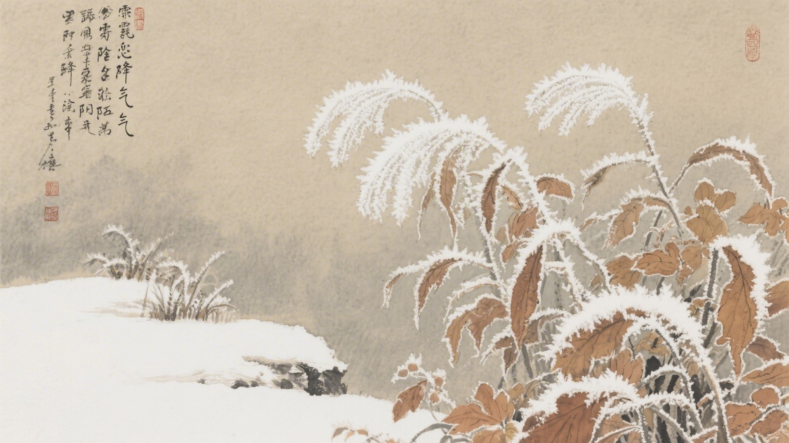

《中国传统色：故宫里的色彩美学》一书中为什么把下面这些颜色归入霜降节气？
银朱、胭脂虫、朱樱、爵头
甘石、迷楼灰、鸦雏、烟墨
十样锦、檀唇、琼琚、棠梨
蜜合、假山南、紫花布、沉香
霜降来了，狼出来捕猎，草木黄落，蛰虫钻进洞里。古人说霜降有三候：豺乃祭兽，草木黄落，蛰虫咸俯。这十六种颜色，便从这三候里来。
霜降的"霜"，是白色的霜。早晨起来，地上白茫茫的，像是撒了一层盐。颜色也被霜打过，红的变暗，绿的变黄，白的更白了。
对应：霜降节气一候"豺乃祭兽"的起、承、转、合四色。
色彩意象：狼群捕猎，血色暗藏。
从鲜红到紫红，是狼群捕猎的色彩变化，也是霜降时节最血腥的画面。

对应：霜降节气二候"草木黄落"的起、承、转、合四色。
色彩意象：草木凋零，落叶飘飞。
从灰白到深黑，是草木凋零的色彩变化，也是霜降时节最萧瑟的景象。

对应：霜降节气三候"蛰虫咸俯"的起、承、转、合四色（其一）。
色彩意象：蛰虫蛰伏，秋色犹存。
从彩色到黄色，是蛰虫蛰伏的色彩变化，也是霜降时节最丰富的层次。

对应：霜降节气三候"蛰虫咸俯"的起、承、转、合四色（其二）。
色彩意象：秋意深沉，色彩内敛。
从淡黄到深褐，是秋意深沉的色彩变化，也是霜降时节最内敛的画面。

霜降这天，早晨起来看，地上结了霜。霜是白色的，细细的，像是面粉洒在地上。太阳一出来，霜就化了，地上湿漉漉的。颜色也跟着化，红的化了，黄的化了，都化成一滩水。

颜色也懂得蛰伏。它们知道，冬天要来了，该躲起来了。红的躲进土里，黄的躲进叶子，青的躲进水里。等明年春天，再出来晒太阳。
（以上解读不代表原书观点）